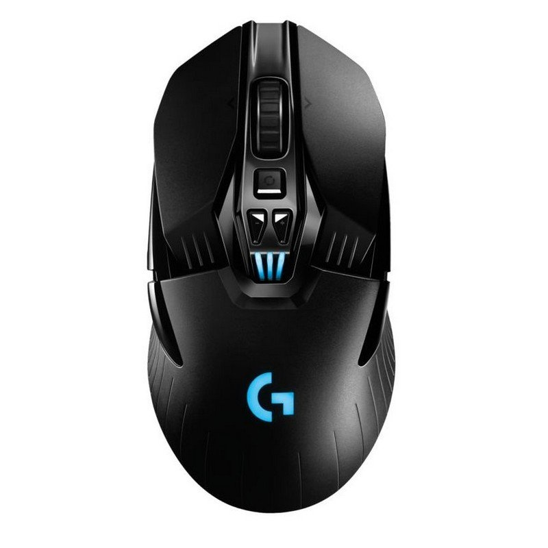

3º Raton de la semana

120€
Logitech G903 Lightspeed
Los profesionales de eSports confían en el G903 con tecnología inalámbrica Lightspeed que ofrece una respuesta
óptima para competir y acertar en el blanco a velocidad vertiginosa. Dotado del sensor PMW3366 avanzado, el
G903 ofrece precisión de seguimiento y uniformidad, incluso a velocidades de más de 400 IPS. Añade el sistema
inalámbrico de carga Powerplay para tener el G903 cargado de continuo.
 Email
Email  Facebook
Facebook  Linkedin
Linkedin  Twitter
Twitter  Instagram
Instagram